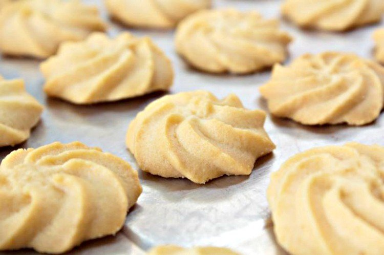

Las galletitas de mantequilla es una delicia es super suave y tiene una testura unica aparte de que es super
sabrosa y facil de hacer

INGREDIENTES
2 Huevo
2 1/2 Tazas de harina,(350g)
1 Cucharadita de vainilla
1 Cucharadita de povo de hornear
100 Gramos de azucar
1 Taza de azucar(200g)
Preparacion
Para empezar con la preparación de las galletas caseras de mantequilla coge un recipiente y mezcla la
mantequilla con el azúcar. Este proceso lo puedes hacer a mano con una espátula, verás como la
mantequilla se va aclarando, formando una masa muy cremosa.
El siguiente paso es añadir los huevos y la vainilla. Continua removiendo con la espátula hasta
conseguir que estos se integren por completo. Si se te hace muy complicado amasar las galletas de
mantequilla a mano puedes usar una varillas eléctricas, pero no deberías tener problemas.
Deja el bowl con la masa a un lado y a parte, cierne la harina junto con el polvo de hornear. Este paso
es muy importante porque esto es lo que nos asegurará que no queden grumos y obtengamos una masa suave y
homogénea.
e añadiendo poco a poco la harina en la preparación y revuelve hasta que se integre todo por completo.
El siguiente paso será envolverla en papel transparente y guardarla en la nevera durante una media hora
aproximadamente. Lo ideal es formar una bola o varias pequeñas
Pasado este tiempo, ya podrás sacar la masa de la nevera. Para trabajar, esparce un poco de harina sobre
una superficie plana y extiéndela con ayuda de un rodillo. Haz las galletas del grosor que quieras y
córtalas con ayuda de un corta pastas con la forma que más te guste o con un vaso para hacer galletas de
mantequilla redondas. Ve precalentando el horno a 180ºC.
Coloca las galletas sobre una bandeja de horno forrada con papel vegetal y hornéalas durante 15 minutos,
o hasta que estén doradas. Las galletas de mantequilla se hacen muy rápido, por lo que deberás vigilar
el horno por si requieren de menos tiempo. Si tu horno tiene la opción, coloca calor arriba y abajo.
Cuando estén listas, saca la bandeja del horno. Notarás que las galletas están un poco blandas, no te
preocupes porque es normal. Lo mejor es dejarlas enfriar sobre una rejilla, ya verás en cuanto se
enfrían se tornan crujientes. Eso si, ten cuidado de no quemarte, así que usa siempre una espátula para
sacar las galletas recién hechas de la bandeja.
Esta receta fue copiada de la pagina kiwilimon.com